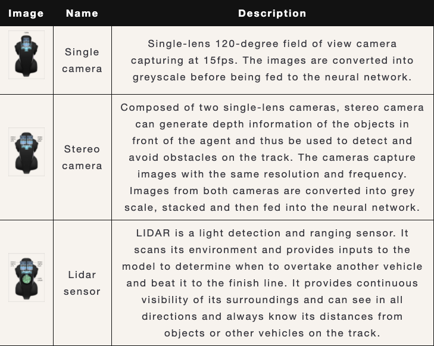
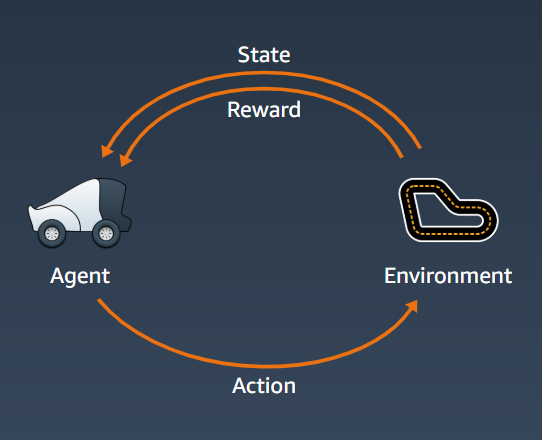
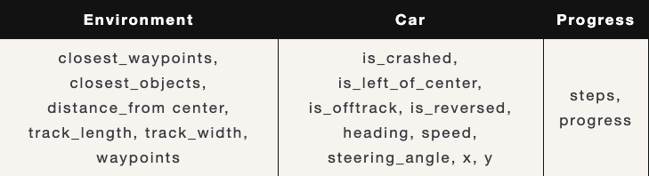
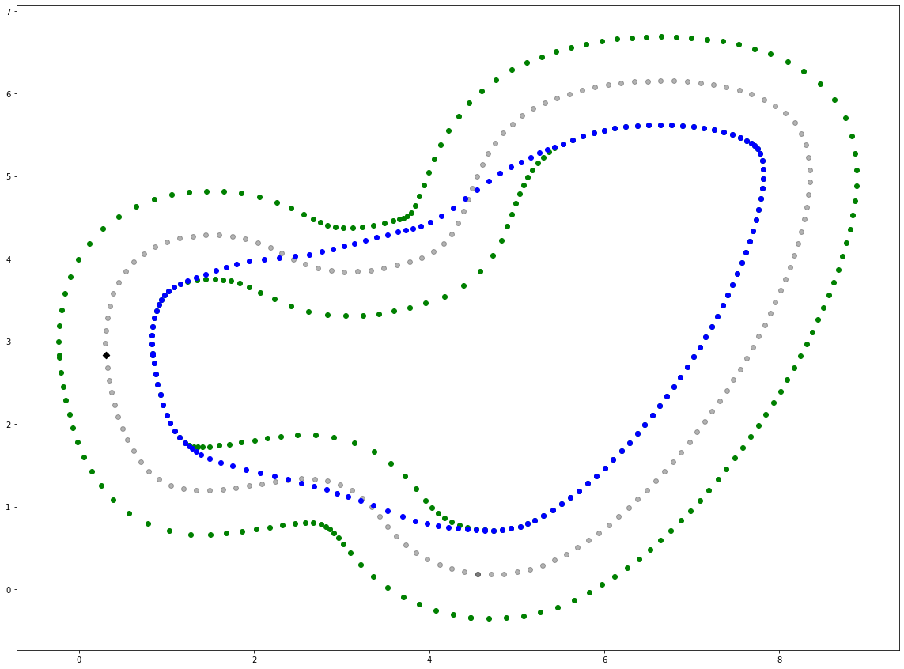

Autonomous AI
AWS DeepRacer Challenge, May 2020
Together with another colleague, I participated in a Reinforcement Learning challenge hosted by Amazon. During the event, we have 1 month to design, implement and train our AWS DeepRacer on cloud and submit our best scores.
-
F1 ProAm Event - May Qualifier
- Object Avoidance: 9th/134
- Time Trial: 41th/1291
- Head-to-head: 34th/202 Americas and Asia-Pacific - May Qualifier
- Time Trial: 66th/330
- Head-to-head: 61th/151
The Journey to the Finish Line
What is AWS DeepRacer?
It is a miniature racing car that is 1/18th of a real car in term of scale[1]. Furthermore, it comes with different type of cameras and sensors that enable autonomous driving. Following are the available sensors (image courtesy of Amazon Web Service):
The sensors sample rate is 15 Hz (15 samples per second). Beside the sensors, the car itself can run up to 4 m/s with maximum steering angle of 30 degrees.
What is reinforcement learning?
Reinforcement learning is a type of machine learning that is capable of planning and decision making. It is one of the big field of research in AI, if you want to know more about it from the ground up, I recommend the book called Reinforcement Learning: An Introduction[2]. Below is a diagram showing a general reinforcement learning schema:
Our agent here is the DeepRacer car. Environment is the actual racing track. Our agent percepts or sees the environment through its sensors, this perception becomes the state of the agent. Then it will perform actions based on its internal set of rules (or model).
The motivation for the model to try to perform better is based on the reward. The model can be a deep learning neural network, trying to approximate the best policy. A policy is a function that map the state and action with highest possible rewards. For example, the rewards can simply be finishing the track, then the policy (agent/model) that manage to finish the track will be awarded higher rewards.
For our current problem, the actions are discrete and separated into 2 groups: steering angle and speed. Steering angle range is 1 - 30 degrees with granularity options 3, 5 or 7. Speed range is 0.1 - 4 ms with granularity options 1, 2, 3. Number of actions is based on granularity only. For example with steering granularity of 3 and speed granularity of 2 will results in total of 3 * 2 = 6 actions.
To actually approximate the best policy, AWS uses PPO (Proximal Policy Optimization)[3,4] method to train the DeepRacer. The underlying neural network is a simple n-layer convolution neural network (CNN). n here can be 3 or 5 in our case.
There are a few parameters we received during training that can be used to calculate the reward functions:
Race Type
This race is done entirely online in the virtual circuit. This is our race track, called Circuit de Barcelona-Catalunya, which is the reproduction of the official F1 Spanish Grand Prix track. We also do a time-trial focus on this track, called The 2019 DeepRacer Championship Cup:
{kind=link}
{kind=link}
Calculating The Optimal Path - Using Neural Networks
The 2019 track also saw many increments. We obtained the optimum path[5,6] by assigning each waypoint a neuron and the sum of distance between each neuron as the loss function to let them converge (minimize the loss). Below was the optimum path for this track after 20K epochs, which was also the shortest path ever possible(the blue line). Now the agent only needed to learn to drive closer and closer to the optimum while remain fast. There were some other algorithms that calculated optimum racing line differently, but here we used the shortest path as our optimum. Below was our calculated optimum path (blue dots) for the 2019 track:
The optimum path(blue) calculated for the race track
The Training and The Results
For F1 Track, we train the model by setting speed and total time used as the reward function, while for Time Trial, besides the speed and total time, we also set the different between actual path and optimal path as a reward function to help the agent converge to shortest path.
Below are the final results we obtained and submitted for this challenge.
Optimal Track
Obstacle Avoid
References
- [1] Amazon. (2020). Retrieved from https://aws.amazon.com/deepracer/
- [2] Sutton, R. S., & Barto, A. G. (2011). Reinforcement learning: An introduction. Retrieved from https://web.stanford.edu/class/psych209/Readings/SuttonBartoIPRLBook2ndEd.pdf
- [3] Schulman, J., Wolski, F., Dhariwal, P., Radford, A., & Klimov, O. (2017). Proximal policy optimization algorithms. arXiv preprint arXiv:1707.06347. Retrieved from https://arxiv.org/abs/1707.06347
- [4] Schulman, J., Wolski, F., Dhariwal, P., Radford, A., & Klimov, O. (2017a). Proximal Policy Optimization. Retrieved from https://openai.com/blog/openai-baselines-ppo/#ppo
- [5] Xiong, Y. (2010). Racing line optimization. Massachusetts Institute of Technology
- [6] Vesel, R. (2015). Racing line optimization@ race optimal. ACM SIGEVOlution, 7(2-3), 12-20.